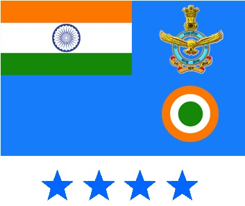
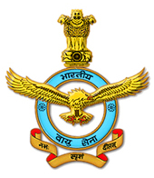

The Motto of Indian Air Force has been taken from eleventh chapter of the Gita, the Discourse given by Lord Krishna to Arjuna on the
battlefield of Kurukshetra during the Great War of Mahabharata. The Lord is showing His Supreme Divine form to Arjuna and the great form
of the Lord is reaching the sky with glory, evoking fear and loss of self-control in the mind of Arjuna.The Indian Air Force, similarly,
aims to overwhelm the adversaries with application of aerospace power in defence of the nation.
Lord, seeing your form “Touching the Sky With Glory”, effulgent, multi-coloured, having its mouth wide open and possessing large flaming
eyes, I, with my innermost self frightened, have lost self-control and find no peace.
All the attributes that are the official Identificaton symbols of IAF are:
IAF Flag:-

The Air Force ensign, different from the Air Force Colours, is blue in colour, containing the National Flag in the first quadrant and a roundel consisting of the colours of the National Flag i.e. saffron, white and green in the centre. This ensign was adopted in 1951 .
IAF Crest:-

Crests have been used for the purpose of recognition and distinguishing formations or Units. They are symbols and source of inspiration and encouragement for the soldiers. The AirForce has adopted various crests for the commands, Squardron and the other establishments. The Crests in the Indian Air Force comprises of a standard frame. The central portion of the frame contains the individual formation sign with a motto shown in the scroll at the foot of the frame. The unit sign is drawn inside a circle of 3 ½ inches diameter. The name of the formation of the units is shown in the upper half of the circle while Bhartiya Vayu Sena inscribed in the lower half. The crest anf the motto are designed based on the role of the formation. The Crest is approved by the President of India and is of great historical and sentimental value. The Crest is normally presented by the AOsC-in-C at ceremonial parades. The importance of the crest can be understood from the fact that the movement of the crest from one place to other is done only by hand of an officer.